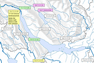
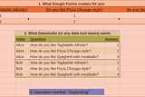
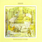

Riccardo Carlesso
Home
Lists
About
Pinned
Riccardo Carlesso
in
DevOps.dev
Dec 14, 2023
23
Pinned
Riccardo Carlesso
Nov 20, 2023
Pinned
Riccardo Carlesso
in
DevOps.dev
Nov 16, 2023
47
Pinned
Riccardo Carlesso
in
Google Cloud - Community
Sep 15, 2022
92
Pinned
Riccardo Carlesso
in
Google Cloud - Community
Sep 12, 2022
27
Riccardo Carlesso
in
DevOps.dev
Jun 7
4

Riccardo Carlesso
in
Google Cloud - Community
Feb 26
21
Riccardo Carlesso
Aug 8, 2023
Riccardo Carlesso
Apr 21, 2023
4
Riccardo Carlesso
in
Google Cloud - Community
Apr 18, 2023
16
Riccardo Carlesso
Apr 12, 2023
Riccardo Carlesso
Dec 22, 2022
107
Riccardo Carlesso
in
Google Cloud - Community
Nov 9, 2022
96
1
Riccardo Carlesso
in
Google Cloud - Community
Jun 7, 2020
18

Riccardo Carlesso
63 Followers
Father, pianist, Rubyist, Googler, linguist, ironman. Calls Zurich / Dublin / Bologna his home.
Follow
Following
See all (77)
Lists

7 stories
View All
Help
Status
About
Careers
Press
Blog
Privacy
Terms
Text to speech
Teams